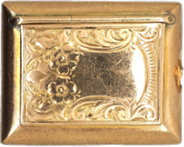
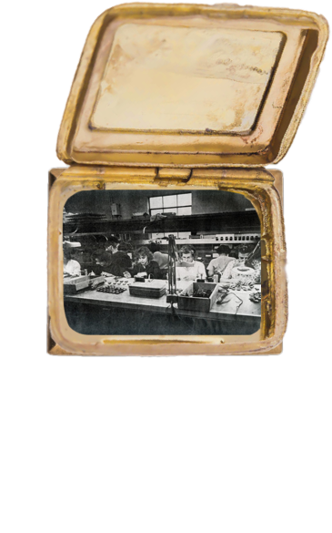
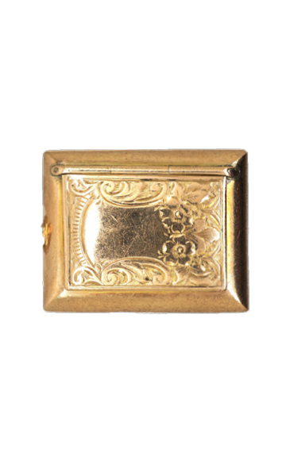
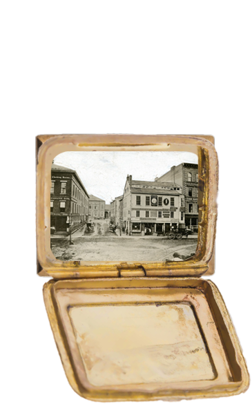
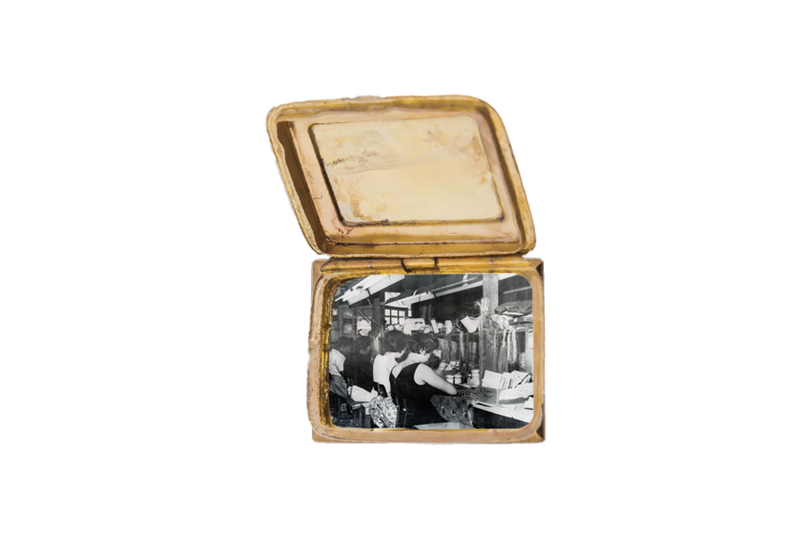

Welcome to The Jewelry Box, a digital archive exploring how personal memory and industrial history live within jewelry. This project started with my interest in jewelry as more than just something that gets worn. I became interested in the time, labor, and emotional weight that gets carried through these objects, even when that labor is hidden or forgotten. Becoming newly situated in the heart of Providence, Rhode Island, I became aware of the city’s connection to jewelry in a way I hadn’t before. When you zoom out on a map, you can see a label for the “Jewelry District,” but for many who live here, it is not a well-known history.
As I researched Providence and its history, I quickly came to learn how the city was shaped by the Industrial Revolution. At one point, it was home to the largest jewelry manufacturing district in the United States, with factories run largely by immigrant labor during the industrial boom. [Pictured below: (1) Factory workers in an assembly line in Providence’s Jewelry District, (2) a Jewelry Store in Providence’s Jewelry District, (3) Factory workers in an assembly line in Providence’s Jewelry District.]





Reflecting on this research made me reflect on how capitalism and industry are remembered. These histories are often told in a way that feels clean or nostalgic, focused on the success and growth of a booming economy, while the realities of factory labor, environmental concern, and the loss of individual makers are pushed to the background.
I surveyed my community through posters and links to online forms to gather responses. Many of the posters were placed around campus and in the surrounding community, not only to gauge student responses, but also to encourage participants to reflect on the history of the land they stand on, their connections to labor and industry, and the histories that came before them to shape where they are today.
1 / 16

2 / 16

3 / 16

4 / 16

5 / 16

6 / 16

7 / 16
8 / 16

9 / 16

10 / 16

11 / 16

12 / 16

13 / 16

14 / 16

15 / 16

16 / 16

I made this website to hold people’s responses and personal connections to jewelry. It’s meant to be a space for stories, memories, and meanings, but also for thinking about how jewelry is made, where it comes from, and how it changes as it moves from maker to factory to owner. Along the way, the identity of the person who made it is often lost, and a new identity is created through the person who owns it.
I’m interested in how jewelry holds memory. Not just of love, gifts, and personal history, but also of labor, industry, and the systems that shape everyday objects. How are these stories of sentimentality and labor passed down and woven into the present day?